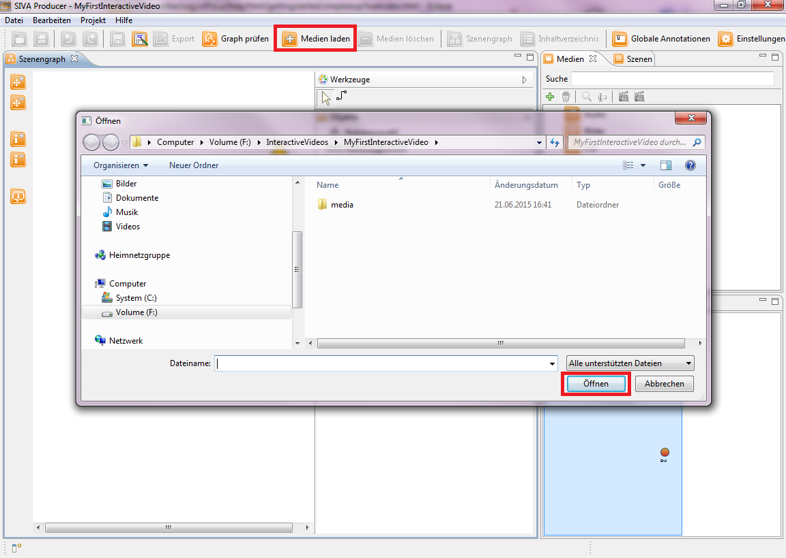
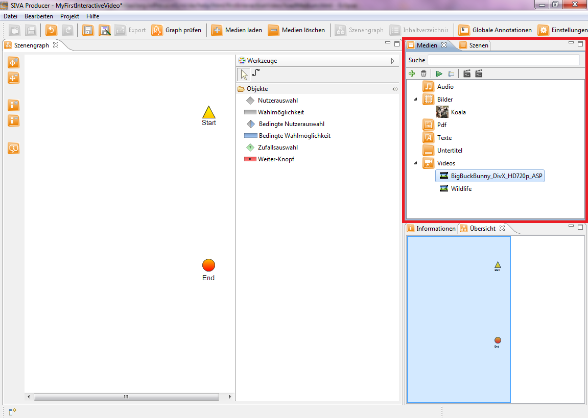

Hinzufügen von Mediendateien
Nachdem Sie das Projekt nun erfolgreich angelegt haben, können Sie Medien laden, die von nun an im Medien-Repository angezeigt werden.
Klicken Sie nun auf den "Medien laden"-Button in der Funktionsleiste ("+"-Button). Es öffnet sich das Öffnen-Fenster, in dem
Sie die Datei auswählen können, die Sie laden möchten.

Nachfolgende Medienarten können ausgewählt werden:
- Video
- Audio
- Bild
- Pdf
- Text
Bitte laden Sie im Rahmen dieses Tutorials zwei Videodateien und eine Bilddatei.
Danach müsste ihr Medienrepository ungefähr so aussehen:

Als nächstes müssen die Videos in Szenen umgewandelt bzw. geschnitten werden, um sie im Szenengraph verankern zu können, damit sie
Teil des interaktiven Videos werden könnnen.
Sie können dies auf zwei verschiedene Arten machen, indem Sie einen Rechtsklick auf ein Video machen und danach eine der folgenden
Optionen wählen:
- Sie möchten, dass das Video komplett als Szene in Ihrem interaktiven Video erscheint: Szene über komplettes Video erstellen
- Sie möchten, dass nur ein Ausschnitt als Szene in Ihrem interaktiven Video erscheint: Szene bearbeiten
Bevorzugen Sie die erste Möglichkeit, d.h. ein komplettes Video als Szene zu übernehmen, so erscheint das gesamte Video danach
als Szene im Szenerepository.
Entscheiden Sie sich für die zweite Möglichkeit, d.h. ein Video zu schneiden, wird Ihnen dies im nächsten Menüpunkt erklärt.
Wichtig für dieses Tutorial ist, dass Sie drei Szenen in das Szenerepository einfügen.
Klicken Sie bitte für die Bearbeitung der Szenen auf den nächsten Menüpunkt "Schneiden von Videos" im Hilfeverzeichnis auf
der linken Seite oder auf nachstehenden Link.
Schneiden von Videos
Merke: Ein Video muss in eine Szene umgewandelt bzw. unterteilt werden, damit es überhaupt in das interaktive Video integriert werden kann.
Merke: Es muss mindestens ein Video geladen werden, um ein interaktives Video zu erstellen!